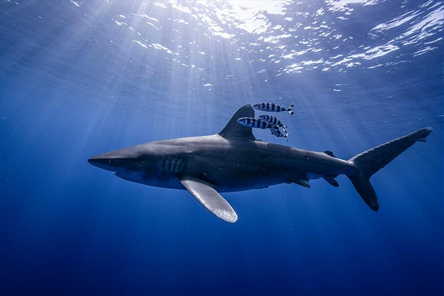

Poaching and global warming
Poaching and finning
According to a article published by the smithsonian and the national museum of history, around 100 Million sharks are poached for their fins.

Global warming and the oceans
According to OCEARCH, a not for profit dedicated to marine studies, sharks have been migrating north due to rapidly increasing temperatures within the south.

What can help
- Reducing Poaching by introducing new bills that control poaching
- Reducing our contribution to climate change globally by (generally) saving power and waste we produce
- informing others about global issues such as global warming and poaching